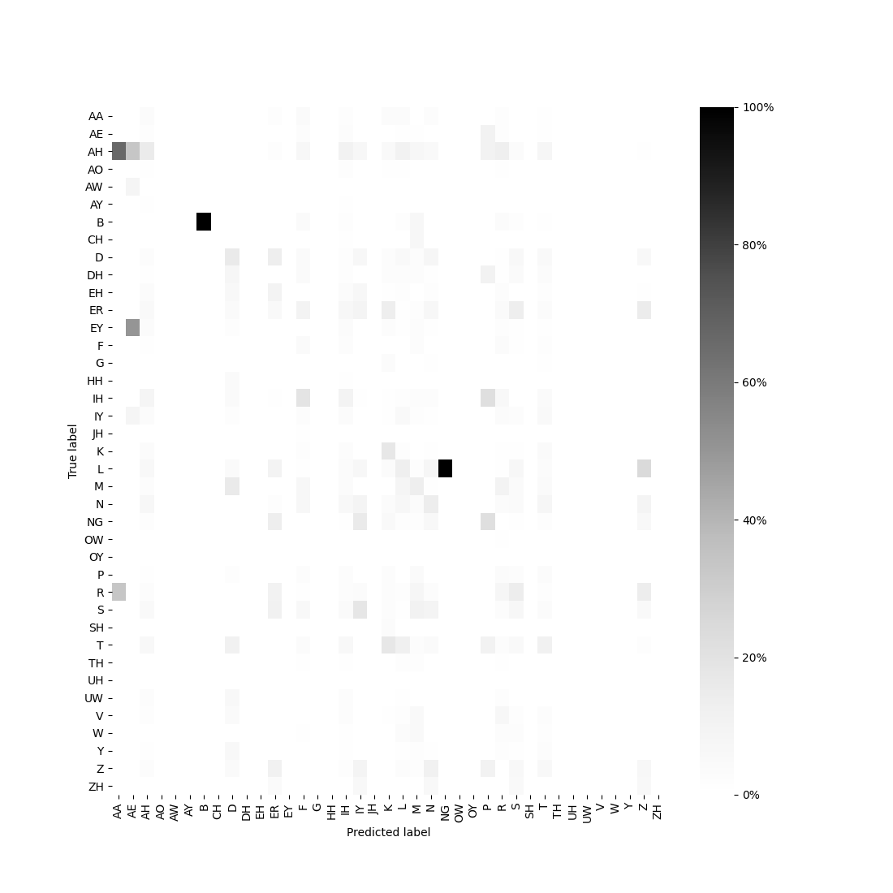
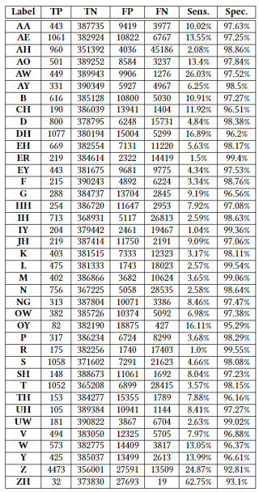

classifierEvaluation module
Dependencies
The following imports are necessary to use this module:
import matplotlib.pyplot as plt
import numpy as np
import pandas as pd
import pickle
import seaborn as sns
Classes
- class classifierEvaluation.LabelOutcome([TP=0, TN=0, FP=0, FN=0])
This class stores the number of true positives, true negatives, false positives and false negatives for one class obtained from testing a classifier with a set of examples, and calculates some outcomes with those data. The object can be created with its attributes or add them later.
- Parameters
TP (int, default=0) – Number of true positives.
TN (int, default=0) – Number of true negatives.
FP (int, default=0) – Number of false positives.
FN (int, default=0) – Number of false negatives.
- setTP(TP)
This method sets the number of true positives.
- Parameters
TP (int) – Number of true positives.
- setTN(TN)
This method sets the number of true negatives.
- Parameters
TN (int) – Number of true negatives.
- setFP(FP)
This method sets the number of false positives.
- Parameters
FP (int) – Number of false positives.
- setFN(FN)
This method sets the number of false negatives.
- Parameters
FN (int) – Number of false negatives.
- getTP()
This method returns the number of true positives.
- Return type
int
- Returns
The number of true positives.
- getTN()
This method returns the number of true negatives.
- Return type
int
- Returns
The number of true negatives.
- getFP()
This method returns the number of false positives.
- Return type
int
- Returns
The number of false positives.
- getFN()
This method returns the number of false negatives.
- Return type
int
- Returns
The number of false negatives.
- getTotalPopulation()
This method returns the total numbers of examples that have been classified.
- Return type
int
- Returns
The number of false negatives.
- getSensitivity()
This method returns the sensitivity of the class.
- Return type
float
- Returns
The sensitivity of the class.
- getSpecificity()
This method returns the specificity of the class.
- Return type
float
- Returns
The specificity of the class.
Functions
- classifierEvaluation.loadProbeResults(dirPath, scriptPath, experimentName, probe, subset)
This function loads the confusion matrix, the phone dict and the list of unique labels.
- Parameters
dirPath (str) – The base path of the corpus that is going to be analyzed.
scriptPath (str) – The path where the
EMG-UKA-Analysisscripts are saved.experimentName (str) – The name of the set of experiments that are being executed.
probe (<
featureSelectionProbe.Probe>) – The probe that is being analyzed.subset (str) – The subset that is being analyzed (‘Train’ or ‘Test’).
- Return type
tuple
- Returns
(confusionMatrix, phoneDict, uniqueLabels, uniquePhones)
confusionMatrix (numpy.ndarray) - The confusion matrix resulting from testing the classifier with the given subset. It’s not normalized.
phoneDict (dict) - A dictionary that saves the relations between the name of the label and the number assigned to it. The keys are the numbers corresponding to the labels and the returned values are the labels as strings.
uniqueLabels (list) - A list of the labels that were present in the training batch.
uniquePhones (list) - A list of the phonemes that were present in the training batch. It is the same as
uniqueLabels, but it contains the phonemes instrformat instead of numeric labels.
- classifierEvaluation.drawConfusionMatrix(dirPath, scriptPath, experimentName, probe, subset)
This function draws a normalized confusion matrix and export the resulting figure as a
.pngimage. This image will be saved into the{dirPath}/results/{experimentName}folder.
- Parameters
dirPath (str) – The base path of the corpus that is going to be analyzed.
scriptPath (str) – The path where the
EMG-UKA-Analysisscripts are saved.experimentName (str) – The name of the set of experiments that are being executed.
probe (<
featureSelectionProbe.Probe>) – The probe that is being analyzed.subset (str) – The subset that is being analyzed (‘Train’ or ‘Test’).
The imagen will be similar to this:

- classifierEvaluation.getOutcomes(dirPath, scriptPath, experimentName, probe, subset)
This function generates a text file with a table in LaTeX format (tabular) that contains the outcomes for each label: True Positives, True Negatives, False Positives, False Negatives, Sensitivity, Specificity, Precision and Recall. The text file will be saved into the
{dirPath}/results/{experimentName}folder.
- Parameters
dirPath (str) – The base path of the corpus that is going to be analyzed.
scriptPath (str) – The path where the
EMG-UKA-Analysisscripts are saved.experimentName (str) – The name of the set of experiments that are being executed.
probe (<
featureSelectionProbe.Probe>) – The probe that is being analyzed.subset (str) – The subset that is being analyzed (‘Train’ or ‘Test’).
When the obtained text file is inserted into a LaTeX, the table in the compiled document will look like this:

- classifierEvaluation.main(dirPath, scriptPath, experimentName, probes)
This is the main function of the module. It draws a confusion matrix and creates an outcome table for train and test subset for every probe programed in the execution.
- Parameters
dirPath (str) – The base path of the corpus that is going to be analyzed.
scriptPath (str) – The path where the
EMG-UKA-Analysisscripts are saved.experimentName (str) – The name of the set of experiments that are being executed.
probe (<
featureSelectionProbe.Probe>) – The probe that is being analyzed.
{kind=link}